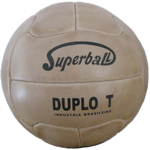
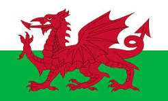

¿De qué se trató el Mundial de 1950?
La Copa Mundial de la FIFA 1950 fue la cuarta edición del torneo y se disputó en Brasil entre junio y julio de 1950. Representó el regreso de la máxima competición internacional de fútbol después de doce años de interrupción debido a la Segunda Guerra Mundial, ya que las ediciones previstas para 1942 y 1946 fueron canceladas.
El campeonato estuvo marcado por varias particularidades. Fue el primer Mundial celebrado después de la guerra, el primero en el que participó Inglaterra y el único en toda la historia que no tuvo una final oficial. En lugar de una final, el campeón se decidió mediante una fase final de grupos entre cuatro selecciones.
Brasil organizó un torneo espectacular y era el gran favorito para quedarse con el título. Sin embargo, Uruguay protagonizó una de las mayores sorpresas de la historia del deporte al derrotar a Brasil en el partido decisivo disputado en el Estadio Maracanã ante cerca de 200.000 espectadores. Este acontecimiento pasó a la historia como el "Maracanazo".
Informacion que tenes que saber
Info general
- Pais Anfitrion: Brasil
- Fecha de Inicio:
24 de Junio de 1950
(24/06/1950) - Fecha de Finalizacion:
16 de Julio de 1950
(16/07/1950) - Duracion: 23 dias
- Organizador: FIFA
- Edicion: IV
Estadisticas
- Partidos jugados: 22
- Goles anotados: 88
- Promedio de gol: 4,00
- Máximo goleador:
Ademir
(9 goles) - Partido decisivo:
Uruguay 2 - 1 Brasil
info de la Ciudad
- Ciudades Sede: 6
- Selecciones Participantes: 13
- Estadios Utilizados: 6
- Estadio Principal:
Estadio Maracanã
Podio
| Posicion | Seleccion | Bandera |
|---|---|---|
| 1º Puesto | Uruguay |  |
| 2º Puesto | Brasil |  |
| 3º Puesto | Suecia |  |
| 4º Puesto | España |  |
(Nota: En 1950 no se disputó una final ni un partido por el tercer puesto. El campeón, el subcampeón, el tercer y el cuarto puesto se determinaron según la clasificación final de la liguilla de cuatro selecciones que conformó la fase final del torneo).
Historia completa de la Copa Mundial de la FIFA 1950
Después del Mundial de 1938, el estallido de la Segunda Guerra Mundial obligó a suspender las ediciones de 1942 y 1946. Durante más de una década el fútbol internacional quedó profundamente afectado por el conflicto, ya que numerosos jugadores participaron en los ejércitos de sus países y muchas competiciones fueron interrumpidas.
En 1946 la FIFA decidió reactivar la Copa del Mundo y eligió a Brasil como sede de la edición de 1950. El país sudamericano había presentado su candidatura antes de la guerra y contaba con el apoyo de la mayoría de las asociaciones nacionales. Como símbolo del evento, Brasil construyó el Estadio Maracanã en Río de Janeiro, considerado en ese momento el estadio más grande del mundo.
Desarrollo del torneo
La organización esperaba la participación de 16 selecciones. Sin embargo, varios equipos se retiraron antes del comienzo del campeonato. Turquía, India y Escocia renunciaron a participar por motivos económicos, logísticos o administrativos, reduciendo el número final de participantes a 13. Otra novedad importante fue el regreso de Uruguay, que no había disputado los Mundiales de 1934 ni 1938 debido a desacuerdos con la FIFA por la elección de las sedes europeas. También destacó el debut de Inglaterra, considerada por muchos como la cuna del fútbol moderno, que recién ingresó a la FIFA después de la guerra. Las selecciones de Alemania y Japón no participaron debido a las consecuencias del conflicto mundial y a las sanciones internacionales posteriores a la guerra.
El Mundial comenzó el 24 de junio de 1950 y se desarrolló en seis ciudades brasileñas. Desde el inicio, Brasil mostró un nivel extraordinario y rápidamente se convirtió en el principal candidato al título. La fase final reunió a Brasil, Uruguay, España y Suecia. Los brasileños aplastaron a Suecia por 7-1 y a España por 6-1, resultados que generaron una enorme confianza nacional. Antes de la última jornada, Brasil solo necesitaba empatar contra Uruguay para proclamarse campeón del mundo.
El Maracanazo
El 16 de julio de 1950 cerca de 200.000 espectadores colmaron el Estadio Maracanã para presenciar lo que parecía una celebración anticipada. Sin embargo, Uruguay remontó el marcador y ganó por 2-1 gracias a los goles de Juan Alberto Schiaffino y Alcides Ghiggia.
La derrota brasileña provocó una conmoción nacional sin precedentes y el encuentro quedó inmortalizado como el Maracanazo. Con esta victoria, Uruguay conquistó su segundo título mundial, repitiendo el logrado en 1930, y se convirtió en una de las grandes potencias históricas del fútbol.
⚽ Pelota Oficial del Mundial 1950

SUPERBALL DUPLO T
La Superball Duplo T fue el balón oficial de la Copa Mundial de la FIFA Brasil 1950, de fabricación brasileña. Significó un hito en la historia de los balones mundialistas, ya que fue el primero en utilizarse sin el tradicional sistema de cordones (balón sin tiento).
Información General
Nombre: Superball Duplo T
Fabricante: Fabricación artesanal brasileña
Material: Cuero de 12 paneles
Color: Marrón
Sistema de cierre: Válvula de inflado, sin cordones
Torneo: Copa Mundial FIFA Brasil 1950
Características
- Primer balón mundialista sin cordones ni cierre visible.
- Costura y pico invisibles.
- Se podía inflar mediante una válvula, a diferencia de los modelos anteriores.
- Su diseño se basó en inventos de los argentinos Luis Polo, Antonio Tossolini y Juan Valbonesi.
- Perfeccionaba el comportamiento en el aire respecto a los balones con tiento.
Dato curioso
Brasil y Uruguay utilizaron en algunos partidos sus propios balones nacionales, manteniendo viva la tradición de discusiones sobre el balón oficial que ya se había dado en la final de 1930. La Superball Duplo T marcó el camino hacia los balones sin tiento que se popularizarían en las décadas siguientes.
Selecciones Participantes
Bajas y ausencias


Asia

Sudamérica
Brasil Uruguay  Paraguay
Paraguay  Chile
Chile  Bolivia
Bolivia Europa
 Inglaterra
Inglaterra  Italia España Suecia
Italia España Suecia  Suiza
Suiza  Yugoslavia
Yugoslavia Norteamérica
 Estados Unidos
Estados Unidos  México
México
Sedes |
||||
|---|---|---|---|---|
|
El comité organizador del Mundial de 1950 estableció seis sedes repartidas en seis ciudades brasileñas. La principal fue Río de Janeiro, donde se construyó el Estadio Maracanã, que en aquella época presentaba el mayor aforo de la historia, con capacidad para cerca de 200.000 espectadores. La segunda sede en importancia fue São Paulo, ciudad más poblada del país, donde el Estadio Pacaembú duplicó su aforo hasta los 60.000 espectadores para actuar como subsede de la fase final. Las restantes sedes estuvieron condicionadas por la presión de los gobiernos estatales sobre el comité organizador, que terminó aceptando a Curitiba, Porto Alegre, Belo Horizonte y Recife. Ninguna de estas cuatro ciudades albergó más de tres partidos durante el torneo. |
||||
| Nombre del Estadio | Estadio | Descripción | Capacidad aprox. | Partidos Jugados |
Estadio Maracanã |
 |
Fue el estadio principal del Mundial y el más grande del mundo en su época. Construido especialmente para el torneo en el barrio de Maracanã, en Río de Janeiro, fue inaugurado el 16 de junio de 1950, apenas una semana antes del inicio de la competición. Allí se disputaron, entre otros, el histórico partido decisivo entre Uruguay y Brasil conocido como el "Maracanazo". | 200.000 | 8 |
Estádio do Pacaembú |
 |
Ubicado en São Paulo, fue inaugurado en 1940 y vio duplicado su aforo hasta los 60.000 espectadores para servir como subsede de la fase final. Allí jugó Uruguay sus dos primeros compromisos de la liguilla final, incluyendo el agónico empate ante España. | 60.000 | 6 |
Estádio Independência |
 |
Situado en Belo Horizonte, fue una de las sedes secundarias del torneo. Allí se disputó el único partido del Grupo 4 entre Uruguay y Bolivia, que terminó 8-0 a favor de los charrúas ante apenas 5.300 espectadores, la peor entrada de todo el campeonato. | 30.000 | 3 |
Estádio Durival de Britto e Silva |
 |
Ubicado en Curitiba, capital del estado de Paraná, fue una de las sedes secundarias aceptadas por la presión de los gobiernos estatales sobre el comité organizador del torneo. | 20.000 | 2 |
Estádio dos Eucaliptos |
 |
Localizado en Porto Alegre, capital de Río Grande del Sur, fue otra de las sedes secundarias incorporadas al torneo a pedido del gobierno estatal correspondiente. | 20.000 | 2 |
Estádio Ilha do Retiro |
 |
Situado en Recife, en el estado de Pernambuco, fue la sede más alejada del resto y albergó un único partido del torneo entre Chile y Estados Unidos. | 20.000 | 1 |
Arbitros de la Copa Mundial de la FIFA 1950 por pais
| Arbitros | Pais |
|---|---|
| George Reader | |
| Giovanni Galeati | |
| Arthur Ellis | |
| Reg Leafe | |
| Sandy Griffiths |  |
| Karel Van der Meer |  |
| Ramón Azón Roma | |
| Generoso Dattilo | |
| Ivan Eklind | |
| Mario Gardelli | |
| Jean Lutz | |
| Alberto Malcher | |
| George Mitchell | |
| Mário Vianna | |
Resumen del torneo — Copa Mundial de la FIFA 1950
Fase de grupos
Grupo 1
- Brasil (5)
- Yugoslavia (4)
- Suiza (3)
- México (0)
Brasil
4:0 (1:0)
México
Partido inaugural del torneo y de inauguración oficial del Estadio Maracanã.
Yugoslavia
3:0 (0:0)
Suiza
Brasil
2:2 (2:1)
Suiza
Jacques Fatton anotó un doblete suizo que sorprendió a Brasil en su único partido fuera de Río.
Yugoslavia
4:1 (2:0)
México
Brasil
2:0 (1:0)
Yugoslavia
Rajko Mitić se golpeó la cabeza antes del partido y Yugoslavia jugó los primeros minutos con diez hombres, ya que aún no se permitían sustituciones.
Suiza
2:1 (1:1)
México
| Seleccion | Pts. | PJ | PG | PE | PP | GF | GC | Dif. |
|---|---|---|---|---|---|---|---|---|
| Brasil |
5 | 3 | 2 | 1 | 0 | 8 | 2 | 6 |
| Yugoslavia |
4 | 3 | 2 | 0 | 1 | 7 | 3 | 4 |
| Suiza |
3 | 3 | 1 | 1 | 1 | 4 | 6 | -2 |
| Mexico |
0 | 3 | 0 | 0 | 3 | 2 | 10 | -8 |
Grupo 2
- España (6)
- Inglaterra (2)
- Chile (2)
- Estados Unidos (2)
Inglaterra
2:0 (1:0)
Chile
España
3:1 (0:1)
Estados Unidos
España remontó con tres goles en los últimos diez minutos del partido.
España
2:0 (2:0)
Chile
Estados Unidos
1:0 (0:0)
Inglaterra
Una de las mayores sorpresas en la historia de los Mundiales: el haitiano Joe Gaetjens marcó el único gol de un equipo estadounidense semiamateur ante los favoritos ingleses.
España
1:0 (0:0)
Inglaterra
Telmo Zarra anotó el único gol del partido que eliminó a Inglaterra en su Mundial debut.
Chile
5:2 (2:0)
Estados Unidos
| Seleccion | Pts. | PJ | PG | PE | PP | GF | GC | Dif. |
|---|---|---|---|---|---|---|---|---|
| España |
6 | 3 | 3 | 0 | 0 | 6 | 1 | 5 |
| Inglaterra |
2 | 3 | 1 | 0 | 2 | 2 | 2 | 0 |
| Chile |
2 | 3 | 1 | 0 | 2 | 5 | 6 | -1 |
| Estados Unidos |
2 | 3 | 1 | 0 | 2 | 4 | 8 | -4 |
Grupo 3
- Suecia (3)
- Italia (2)
- Paraguay (1)
Suecia
3:2 (2:1)
Italia
La selección de Italia llegó debilitada tras la Tragedia de Superga y viajó en barco por más de dos semanas. Suecia, integrada por amateurs, dio la sorpresa.
Suecia
2:2 (2:1)
Paraguay
Italia
2:0 (1:0)
Paraguay
| Seleccion | Pts. | PJ | PG | PE | PP | GF | GC | Dif. |
|---|---|---|---|---|---|---|---|---|
| Suecia |
3 | 2 | 1 | 1 | 0 | 5 | 4 | 1 |
| Italia |
2 | 2 | 1 | 0 | 1 | 4 | 3 | 1 |
| Paraguay |
1 | 2 | 0 | 1 | 1 | 2 | 4 | -2 |
Grupo 4
- Uruguay (2)
- Bolivia (0)
Uruguay
8:0 (4:0)
Bolivia
Debido al retiro de Francia e India, este grupo quedó reducido a un único partido. Óscar Míguez anotó un triplete y el estadio registró la peor entrada del torneo, con 5.300 espectadores.
| Seleccion | Pts. | PJ | PG | PE | PP | GF | GC | Dif. |
|---|---|---|---|---|---|---|---|---|
| Uruguay |
2 | 1 | 1 | 0 | 0 | 8 | 0 | 8 |
| Bolivia |
0 | 1 | 0 | 0 | 1 | 0 | 8 | -8 |
Fase Final — Liguilla de Campeones de Grupo
A diferencia de cualquier otra edición de la Copa Mundial, en 1950 no se disputaron semifinales ni una final única. Los cuatro campeones de grupo (Brasil, Uruguay, España y Suecia) jugaron todos contra todos en tres jornadas, y el primero en la tabla final se consagró campeón del mundo.
Brasil
7-1
Suecia
Uruguay
2-2
España
Uruguay
3-2
Suecia
Brasil
6-1
España
Suecia
3-1
España
Uruguay
2-1
Brasil
El partido decisivo: "Maracanazo"
Liguilla Final — última jornada
Suecia 3 España 1Partido decisivo
Uruguay 2 Brasil 1(Nota: Como Brasil necesitaba solo un empate y Uruguay necesitaba ganar, el partido de la última jornada entre ambos países terminó funcionando, en la práctica, como la final del torneo, a pesar de que el formato no contemplaba oficialmente un partido de ese tipo).
Máximos goleadores — Copa Mundial de la FIFA 1950
| Jugador | Goles | Pais |
|---|---|---|
| Ademir | 9 | |
| Óscar Míguez | 5 | |
| Alcides Ghiggia | 4 | |
| Chico | 4 | |
| Estanislao Basora | 4 | |
| Telmo Zarra | 4 | |
| Jair | 3 | |
| Juan Alberto Schiaffino | 3 | |
Máximos asistentes — Copa Mundial de la FIFA 1950
Las asistencias oficiales del Mundial de 1950 no fueron registradas por la FIFA de forma sistemática, por lo que no existe una estadística completamente oficial. Sin embargo, historiadores y registros posteriores reconocen la participación de varios jugadores destacados en la creación de goles durante el torneo.
| Jugador | Asistencias aprox. | Pais |
|---|---|---|
| Zizinho | 5 | |
| Julio Pérez | 3 | |
| Alcides Ghiggia | 2 | |
| Jair | 2 | |
| Obdulio Varela | 2 | |
| Estanislao Basora | 2 | |
| Ademir | 1 | |
| Juan Alberto Schiaffino | 1 | |
| Piru Gaínza | 1 | |
| George Robledo | 1 | |
Equipo estelar — Copa Mundial de la FIFA 1950
El Mundial de 1950 no contó con un premio "Balón de Oro" oficial como el actual, pero distintos historiadores y publicaciones de la época coinciden en señalar a los siguientes futbolistas como los más destacados del torneo.
Portero
🧤 Roque Máspoli (Uruguay)Defensas
🛡️ Juvenal (Brasil)🛡️ Matías González (Uruguay)
Mediocampistas
⚙️ Víctor Rodríguez Andrade (Uruguay)⚙️ Obdulio Varela (Uruguay)
⚙️ Billy Wright (Inglaterra)
Delanteros
⚽ Estanislao "Agustín" Gaínza (España)⚽ Jair (Brasil)
⚽ Ademir (Brasil)
⚽ Zizinho (Brasil)
⚽ Alcides Ghiggia (Uruguay)
(Nota: Muchos cronistas de la época también destacan la actuación de Zizinho como el mejor jugador del torneo, a pesar de que su selección no logró conquistar el título).
Controversias de la Copa Mundial de la FIFA 1950
A pesar de haber sido el regreso triunfal de la Copa Mundial tras la Segunda Guerra Mundial, la edición de 1950 también estuvo marcada por varias polémicas. Desde problemas de organización y formato hasta una de las mayores tragedias deportivas de la historia, estas controversias quedaron registradas como parte de uno de los Mundiales más recordados.
-
Las numerosas retiradas previas al torneo
La FIFA esperaba contar con 16 selecciones, pero Turquía, India, Escocia, Francia y Argentina renunciaron a participar por motivos económicos, logísticos o administrativos. Esto obligó a reorganizar por completo el formato de competición, dejando un grupo con solo tres selecciones y otro con apenas dos.
-
Un formato sin final que generó polémica
Muchos aficionados y periodistas consideraron extraño que el campeón se decidiera mediante una liguilla final entre cuatro selecciones en lugar de una final directa. Hasta el día de hoy, la edición de 1950 sigue siendo la única en la historia de los Mundiales sin un partido de final oficial.
-
Las enormes presiones sobre los jugadores brasileños
La prensa y las autoridades brasileñas daban prácticamente por asegurado el título antes de enfrentarse a Uruguay en la última jornada. Algunos diarios de Río de Janeiro llegaron a publicar titulares como "Brasil Campeão Mundial de Futebol 1950" el mismo día del partido decisivo, e incluso se había compuesto una canción de victoria días antes del encuentro.
-
El "Maracanazo" y la crisis deportiva nacional
La derrota brasileña ante Uruguay generó una conmoción nacional sin precedentes. Se convirtió en uno de los acontecimientos más impactantes de la historia del fútbol mundial y sigue siendo considerado una de las mayores sorpresas deportivas de todos los tiempos.
-
El cambio de uniforme de la selección brasileña
Tras la derrota, la Confederación Brasileña de Deportes decidió que la selección debía abandonar su tradicional camiseta blanca, asociada con la tragedia de 1950. Un concurso público convocado por el diario Correio da Manhã dio origen al uniforme amarillo y verde que hoy identifica a Brasil en todo el mundo.
-
El "chivo expiatorio" del Maracanazo
El arquero brasileño Moacir Barbosa fue señalado durante el resto de su vida por no haber detenido el remate de Ghiggia, a pesar de que el resultado fue responsabilidad de todo un equipo. Su caso se convirtió en uno de los ejemplos más citados de presión mediática y social sobre un deportista en la historia del fútbol.
Tabla de Rendimiento y Posiciones Finales
| Posicion | Seleccion | Etapa Alcanzada | PJ | PG | PE | PP | GF | GC | DG | Rendimiento |
|---|---|---|---|---|---|---|---|---|---|---|
| 1 | Uruguay |
Campeon | 4 | 3 | 1 | 0 | 15 | 5 | +10 | 87,5% |
| 2 | Brasil |
Subcampeon | 6 | 4 | 1 | 1 | 22 | 6 | +16 | 75,0% |
| 3 | Suecia |
Fase Final (3º puesto) | 5 | 2 | 1 | 2 | 11 | 15 | -4 | 50,0% |
| 4 | España |
Fase Final (4º puesto) | 6 | 3 | 1 | 2 | 10 | 12 | -2 | 58,3% |
| 5 | Yugoslavia |
Fase de grupos | 3 | 2 | 0 | 1 | 7 | 3 | +4 | 66,7% |
| 6 | Suiza |
Fase de grupos | 3 | 1 | 1 | 1 | 4 | 6 | -2 | 50,0% |
| 7 | Italia |
Fase de grupos | 2 | 1 | 0 | 1 | 4 | 3 | +1 | 50,0% |
| 8 | Inglaterra |
Fase de grupos | 3 | 1 | 0 | 2 | 2 | 2 | 0 | 33,3% |
| 9 | Chile |
Fase de grupos | 3 | 1 | 0 | 2 | 5 | 6 | -1 | 33,3% |
| 10 | Estados Unidos |
Fase de grupos | 3 | 1 | 0 | 2 | 4 | 8 | -4 | 33,3% |
| 11 | Paraguay |
Fase de grupos | 2 | 0 | 1 | 1 | 2 | 4 | -2 | 25,0% |
| 12 | Mexico |
Fase de grupos | 3 | 0 | 0 | 3 | 2 | 10 | -8 | 0% |
| 13 | Bolivia |
Fase de grupos | 1 | 0 | 0 | 1 | 0 | 8 | -8 | 0% |
- PJ: PARTIDOS JUGADOS
- PG: PARTIDOS GANADOS
- PE: PARTIDOS EMPATADOS
- PP: PARTIDOS PERDIDOS
- GF: GOLES A FAVOR
- GC: GOLES EN CONTRA
- DG: DIFERENCIA DE GOL
- RENDIMIENTO: BASADA EN LA EFECTIVIDAD DE PARTIDOS (PG, PE, PP)